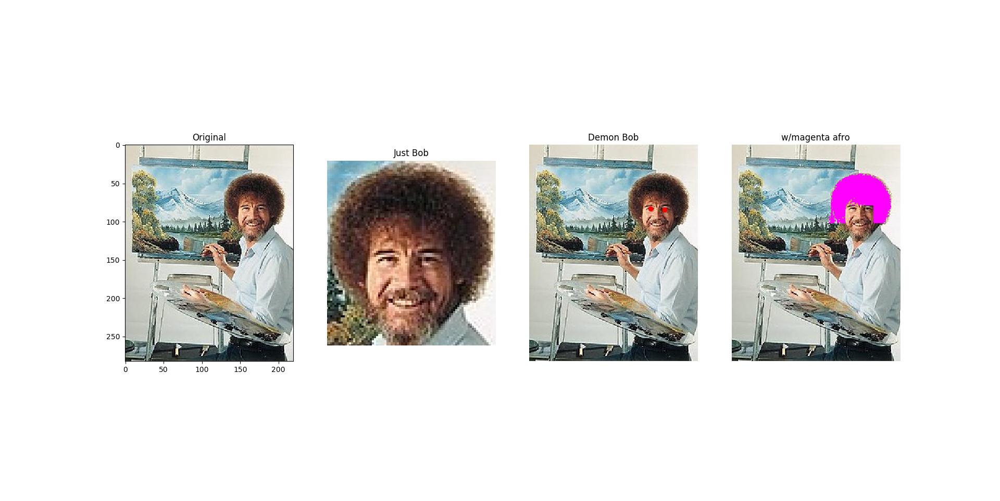
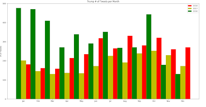

This is my scratch game
This is a fun little maze game I made, I promise it's possible to beat it.
App Inventor GPA calculator

This app works on Android, and it calculates GPA for eight classes.
All you need to enter are your grades and how many credits they're worth.
Flowchart in Python: Press 'run' for it to start.
This is my flowchart in python, I made a flowchart on paper before typing out all the code. You can see all the code above.
This is my restaraunt helper in Python: Press 'run' for it to start.
It can help add a tip, the tax, and to split the bill among any amount of people. It also asks you whether you are part of Gamberale's exclusive club, which gives you a ten percent discount.
This program also calculates how much you are really paying if you use a credit card, which is two percent more, unless you use American Express, which is three percent.
Lastly, it'll print a recipt for you. But enough of me explaining it - try it!
Image manipulation
These are images of Bob Ross that I manipulated in python. As you can see, the first one is the original photo.
The second one is cropped so that it just shows Bob's face. The third one is the same as the original, but with
red circles over his eyes. The last photo is similar to the original except that Bob's hair is magenta.
This is my example of a graph in python to answer the question:
How has Trump's rate of tweeting changed over the years?
If the image resolution is too low, the green bars are 2016, the yellow bars are 2017, and the red ae 2018. The y axis is number of tweets in increments of 100, and the x-axis is months in increments of one.
We used data from a secure source that listed out every one of Trump's tweets with data about times, dates, the actual message, and more.
This answered our question of how Trump's rate changed over the years. Although it isn't the most clear because the years are all together, Trump has fluxuated quite a bit with no clear trend.
Either way, it's interesting to look back and try to see which current events influenced him to tweet more or less, and I am happy with how it turned out.